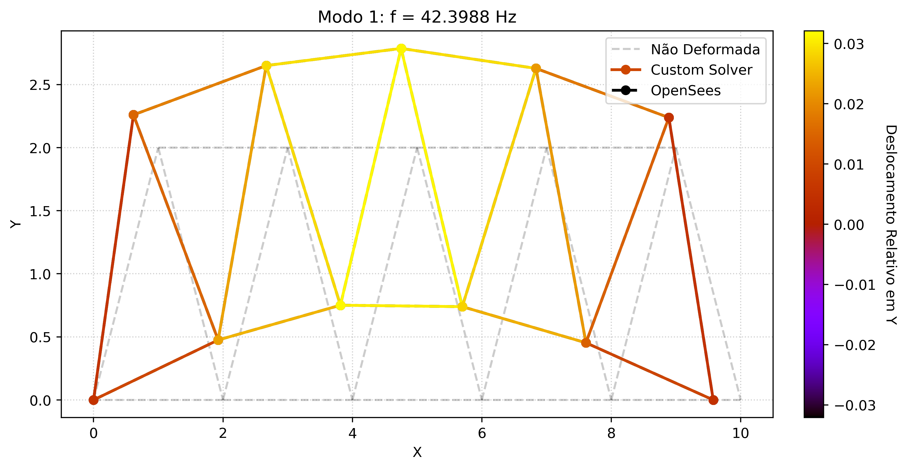
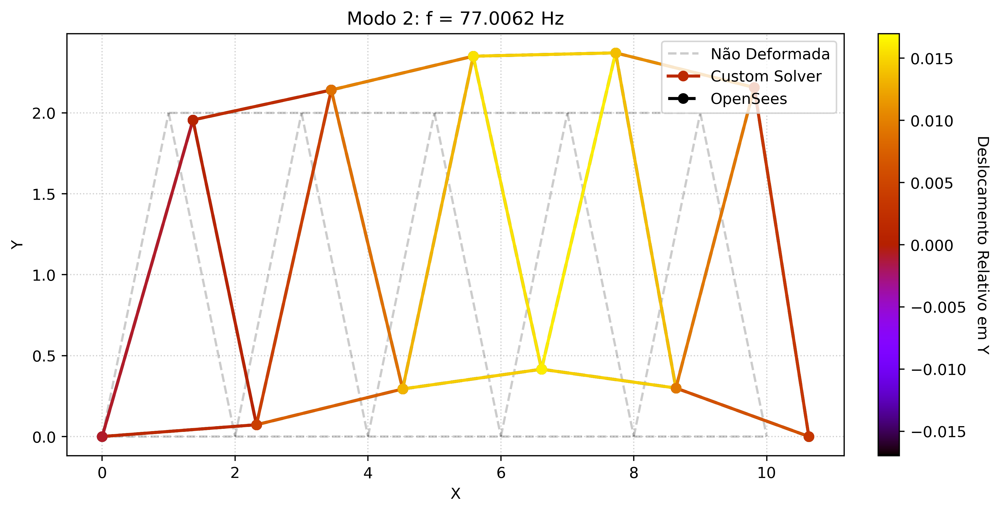
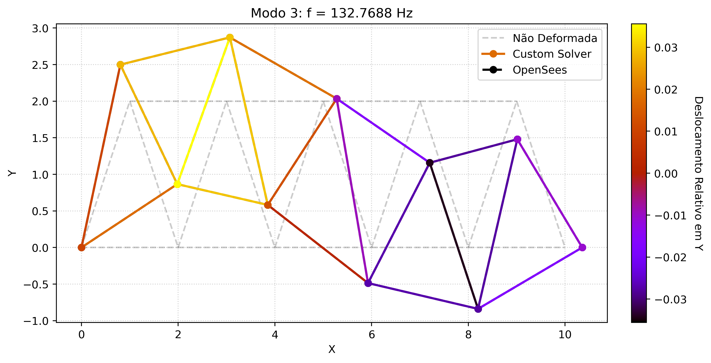
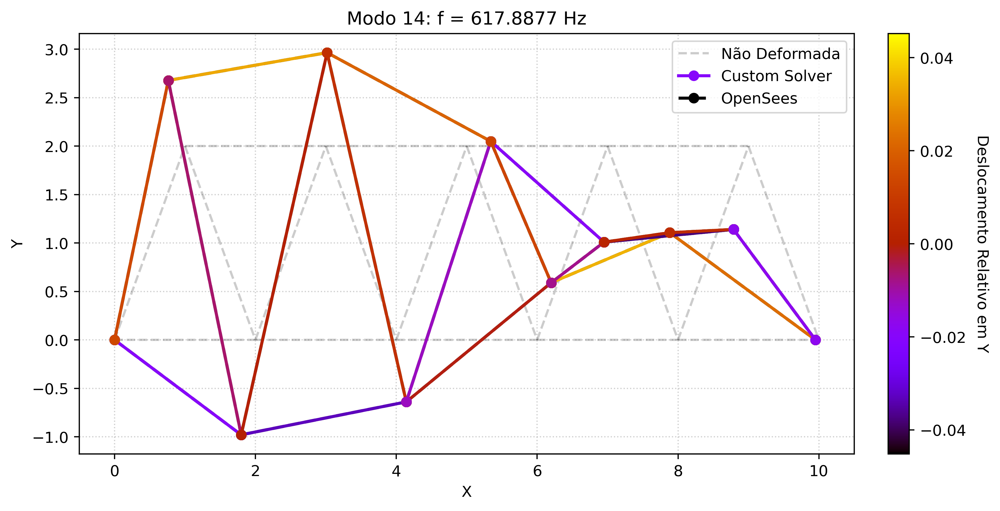
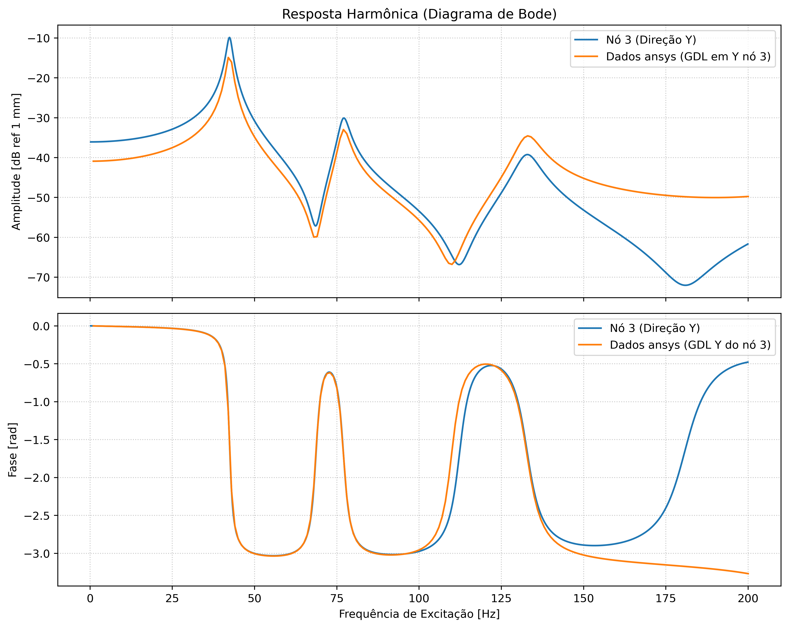

Dinâmica Estrutural e Análise Modal de Treliças (MEF)
A análise dinâmica de uma estrutura começa pela compreensão de suas propriedades intrínsecas: os modos de vibrar e suas frequências naturais. O Método dos Elementos Finitos (MEF) discretiza o domínio contínuo da treliça em um número finito de graus de liberdade, transformando as equações diferenciais parciais em um sistema algébrico matricial.
A equação de movimento para o sistema em vibração livre e não amortecida é governada pelo equilíbrio entre as forças inerciais e as forças elásticas:
Onde \([M]\) é a matriz de massa global e \([K]\) é a matriz de rigidez global. Assumindo que a estrutura vibra de forma harmônica simples sincronizada, os deslocamentos podem ser descritos como \(\{U\} = \{\phi\}e^{i\omega t}\). Substituindo essa solução na equação de movimento, chegamos ao problema de autovalores:
A resolução deste sistema nos fornece duas informações físicas fundamentais:
- Autovalores (\(\omega^2\)): Representam as frequências circulares naturais ao quadrado. A partir delas, obtemos as frequências naturais em Hertz (\(f = \omega / 2\pi\)), que indicam as frequências de ressonância da estrutura.
- Autovetores (\(\{\phi\}\)): Representam as Formas Modais, ou seja, a configuração geométrica relativa que a estrutura assume ao vibrar em cada uma dessas frequências naturais.
Para manter a constância em relação às análises a treliça foi definida num arquivo separado (truss_config.py) e tem o seguinte formato e material:
NODES: dict[int, tuple[float, float, float]] = { # em metros
# Banzo Inferior
0: (0.0, 0.0, 0.0), # Apoio Esquerdo
1: (2.0, 0.0, 0.0),
2: (4.0, 0.0, 0.0),
3: (6.0, 0.0, 0.0),
4: (8.0, 0.0, 0.0),
5: (10.0, 0.0, 0.0), # Apoio Direito
# Banzo Superior (deslocado 1m para formar os triângulos)
6: (1.0, 2.0, 0.0),
7: (3.0, 2.0, 0.0),
8: (5.0, 2.0, 0.0),
9: (7.0, 2.0, 0.0),
10: (9.0, 2.0, 0.0),
}
ELEMENTS: dict[int, tuple[int, int]] = {
# Banzo Inferior
0: (0, 1),
1: (1, 2),
2: (2, 3),
3: (3, 4),
4: (4, 5),
# Banzo Superior
5: (6, 7),
6: (7, 8),
7: (8, 9),
8: (9, 10),
# Diagonais
9: (0, 6),
10: (6, 1),
11: (1, 7),
12: (7, 2),
13: (2, 8),
14: (8, 3),
15: (3, 9),
16: (9, 4),
17: (4, 10),
18: (10, 5),
}
aco: material = material(modElast=210e9, coefPoiss=0.3, dens=7850, A=0.005, name="ACO")
trelica: sistema = sistema(nodes=NODES, elem=ELEMENTS, material=aco)
Importamos todas as classes criadas, a configuração da treliça e nosso helper script para plotagem, o OpenSees e algumas outras bibliotecas necessárias para a análise.
from FEM_classes_3D import Node, TrussElement, FEMSystem
from plot_functions import plot_mode_shape
from truss_config import trelica
import openseespy.opensees as ops
import numpy as np
import matplotlib.pyplot as plt
import pandas as pd
Analise modal
Vamos primeiro montar o sistema no solver desenvolvido para o trabalho e fazer a análise modal do sistema.
# Quantidade de modos a serem calculados
numModos = list(trelica.elem.keys())[-1]
nodes: list[Node] = []
for id, (x, y, z) in trelica.nodes.items():
nodes.append(Node(id=id, x=x, y=y, z=z))
elems: list[TrussElement] = []
for id, (no_i, no_j) in trelica.elem.items():
elems.append(
TrussElement(
id=id,
node_i=nodes[no_i],
node_j=nodes[no_j],
E=trelica.material.modElast,
A=trelica.material.A,
rho=trelica.material.dens,
)
)
bcs = [
nodes[0].dof_x, # Apoio fixo: Trava X
nodes[0].dof_y, # Apoio fixo: Trava Y
nodes[5].dof_y, # Apoio móvel: Trava Y
]
# Força todos os nós a não saírem do plano 2D
for no in nodes:
bcs.append(no.dof_z)
sistema = FEMSystem(nodes=nodes, elements=elems, boundarycond=bcs)
freqNaturais, formasModais = sistema.solve_modal_analysis(num_modes=numModos)
Para atestar a validade física e consistência matemática do solver implementado, os resultados do problema de autovalores são comparados aos de um software comercial consolidado (OpenSees).
# Limpa a memória de análises anteriores
ops.wipe()
# Modelo básico, 3 Dimensões (X e Y), 3 Graus de Liberdade por nó
ops.model("basic", "-ndm", 2, "-ndf", 2)
# Instanciamento dos nós
# OpenSees exige que os IDs sejam maiores que zero, por isso id+1
for n_id, (n_x, n_y, _) in trelica.nodes.items():
ops.node(n_id + 1, n_x, n_y)
# Condições de contorno
# Sintaxe: ops.fix(node_tag, dof_x, dof_y) -> 1 = Travado, 0 = Livre
# Apoio Fixo: Trava X e Y
ops.fix(0 + 1, 1, 1)
# Apoio Móvel: Trava apenas Y
ops.fix(5 + 1, 0, 1)
# MATERIAL E PROPRIEDADES
mat_tag = 1
# Cria um material elástico linear usando o Módulo de Young configurado no truss_config.py
ops.uniaxialMaterial("Elastic", mat_tag, trelica.material.modElast)
# ELEMENTOS (Treliça)
# Para o elemento de treliça o OpenSees pede a densidade em Kg/m ao invés de Kg/m^3
densidadeLinear = trelica.material.dens * trelica.material.A
for e_id, (n_i, n_j) in trelica.elem.items():
# Sintaxe: ops.element('Truss', ele_tag, node_i, node_j, Area, mat_tag, '-rho', densidade linear, '-cMass', True(1) ou False(0))
# A flag '-cMass 1' força o uso da Matriz de Massa Consistente no lugar da de massa concentrada
ops.element(
"Truss",
e_id + 1,
n_i + 1,
n_j + 1,
trelica.material.A,
mat_tag,
"-rho",
densidadeLinear,
"-cMass",
1,
)
# Calcula os autovalores a partir do problema de autovalor e autovetor
lambdas = ops.eigen(numModos)
freqNaturaisOpenSees = np.array([])
total_dofs = len(trelica.nodes) * 3
formasModaisOpenSees = np.zeros([total_dofs, numModos])
for i, lam in enumerate(lambdas):
# Calcula a frequência natural e à adiciona ao vetor de frequências naturais
omega = np.sqrt(lam)
freq_Hz = omega / (2 * np.pi)
freqNaturaisOpenSees = np.append(freqNaturaisOpenSees, freq_Hz)
# Extrai os deslocamentos nó a nó para montar o vetor completo
for n_id in trelica.nodes.keys():
if n_id != 0:
# Tags no OpenSees são +1. Modos no OpenSees começam em 1 (i + 1)
# Omitindo o DOF, ele retorna a lista completa: [ux, uy]
deslocamentos = ops.nodeEigenvector(n_id + 1, i + 1)
# Mapeando para os índices "espaçados" da sua classe 3D (X, Y, Z)
dof_x = n_id * 3
dof_y = n_id * 3 + 1
# Inserindo os valores retornados na matriz global
formasModaisOpenSees[dof_x, i] = deslocamentos[0] # ux
formasModaisOpenSees[dof_y, i] = deslocamentos[1] # uy
# O dof_z (n_id * 3 + 2) automaticamente continua sendo 0
Visualização das Formas Modais
Fisicamente, as formas modais não possuem uma amplitude absoluta (elas não estão em milímetros ou metros). Elas representam apenas a proporção de deslocamento entre os nós da estrutura. Uma forma modal indica que, quando o nó A se desloca 1 unidade para cima, o nó B necessariamente se desloca 0.5 unidades para baixo, por exemplo.
Para efeitos de visualização, aplicamos um fator de escala arbitrário. O objetivo desta representação é permitir a inspeção visual dos eixos de flexão e identificar quais nós permanecem parados (nós modais) durante a vibração em uma frequência específica.
Os elementos da UI foram gerados usando marimo notebook e estão disponíveis na versão completa do notebook disponível no github
fig, ax = plt.subplots(figsize=(10, 5))
idx = seletor_modo.value - 1
exibir_custom = seletor_visibilidade_custom.value
# 1. Plotar o Custom Solver
if exibir_custom:
plot_mode_shape(
sistema,
freqNaturais,
formasModais,
axs=ax,
mode_index=idx,
scale=seletor_escala.value,
label="Custom Solver",
use_hue=True,
)
# 2. Plotar o OpenSees
if seletor_visibilidade_opensees.value:
# Se o Custom também estiver visível, usamos o OpenSees como contorno (tracejado preto)
# Se apenas o OpenSees estiver visível, aplicamos o Hue a ele
usar_hue_ops = not exibir_custom
cor_ops = "black" if exibir_custom else "red"
estilo_ops = "--" if exibir_custom else "-"
fundo_ops = not exibir_custom
plot_mode_shape(
sistema,
freqNaturaisOpenSees,
formasModaisOpenSees,
axs=ax,
mode_index=idx,
scale=seletor_escala.value,
label="OpenSees",
color=cor_ops,
linestyle=estilo_ops,
use_hue=usar_hue_ops,
plot_original=fundo_ops,
)
# fig.savefig(
# f"docs_trelica/docs/assets/comparativo_forma_modal_{idx}.png",
# dpi=400,
# bbox_inches="tight",
# )
mo.vstack([controles, mo.as_html(fig)])




Figura 1 Comparativo entre o solver desenvolvido e o OpenSees para as formas modais, a convergência foi visualmente indistinguível.
Para as frequências naturais calculou-se o erro relativo entre o valor obtido pelo OpenSees e pelo solver desenvolvido. A convergência também foi excelente.
erros_abs = np.abs(freqNaturais - freqNaturaisOpenSees)
# Proteção contra divisão por zero
erros_perc = np.where(freqNaturais != 0, (erros_abs / freqNaturais) * 100, 0.0)
# 2. Cria o DataFrame do Pandas
df_comparativo = pd.DataFrame(
{
"Modo": np.abs(freqNaturais - freqNaturaisOpenSees),
"Custom Solver [Hz]": np.round(freqNaturais, 4),
"OpenSees [Hz]": np.round(freqNaturaisOpenSees, 4),
"Erro Absoluto [Hz]": np.round(erros_abs, 6),
"Erro Relativo [%]": np.round(erros_perc, 6),
}
)
# 3. Converte a tabela para uma string puramente em Markdown
tabela_markdown = df_comparativo.to_markdown(index=False)
# 4. Extrai o erro máximo para destacar
erro_max_abs = np.max(erros_abs)
# Cria o bloco visual final que será exportado perfeitamente
pagina_mkdocs = (
f"{tabela_markdown}\n\n"
f"> **Erro Máximo Encontrado:** `{np.max(erros_abs):.2e} Hz`\n\n"
)
Abaixo, a comparação direta entre as frequências obtidas pelo solver matricial customizado e o OpenSees:
| Modo | Custom Solver [Hz] | OpenSees [Hz] | Erro Absoluto [Hz] | Erro Relativo [%] |
|---|---|---|---|---|
| 1 | 42.3988 | 42.3988 | 5.68434e-14 | 1.34069e-13 |
| 2 | 77.0062 | 77.0062 | 8.52651e-14 | 1.10725e-13 |
| 3 | 132.769 | 132.769 | 8.52651e-14 | 6.42207e-14 |
| 4 | 225.483 | 225.483 | 5.68434e-14 | 2.52096e-14 |
| 5 | 237.637 | 237.637 | 5.68434e-14 | 2.39203e-14 |
| 6 | 326.904 | 326.904 | 1.13687e-13 | 3.47768e-14 |
| 7 | 348.531 | 348.531 | 5.68434e-14 | 1.63094e-14 |
| 8 | 383.878 | 383.878 | 5.68434e-14 | 1.48077e-14 |
| 9 | 454.186 | 454.186 | 0 | 0 |
| 10 | 472.645 | 472.645 | 5.68434e-14 | 1.20267e-14 |
| 11 | 525.195 | 525.195 | 1.13687e-13 | 2.16466e-14 |
| 12 | 556.61 | 556.61 | 0 | 0 |
| 13 | 599.779 | 599.779 | 0 | 0 |
| 14 | 617.888 | 617.888 | 1.13687e-13 | 1.83993e-14 |
| 15 | 633.395 | 633.395 | 1.13687e-13 | 1.79488e-14 |
| 16 | 687.907 | 687.907 | 0 | 0 |
| 17 | 756.815 | 756.815 | 3.41061e-13 | 4.50653e-14 |
| 18 | 807.791 | 807.791 | 3.41061e-13 | 4.22214e-14 |
Erro Máximo Encontrado:
3.41e-13 Hz
Análise Harmônica (Resposta em Frequência)
Enquanto a análise modal estuda a estrutura isolada, a Análise Harmônica investiga como a estrutura se comporta ao ser submetida a uma carga externa, como o funcionamento de um motor desbalanceado.
Para que a resposta da estrutura não tenda ao infinito ao atingir a ressonância, é necessário introduzir a dissipação de energia. Fisicamente, utilizamos o modelo de amortecimento proporcional, que assume que a matriz de amortecimento \([C]\) é uma combinação linear da massa e da rigidez do sistema:
Os coeficientes \(\alpha\) e \(\beta\) são calibrados para garantir uma taxa de amortecimento crítico (geralmente em torno de \(2\%\)) ancorada nas duas primeiras frequências naturais mais relevantes para o fenômeno.
O Problema Transiente (Método de Integração Passo a Passo)
Softwares orientados a análises sísmicas (como o OpenSees) geralmente não resolvem o problema harmônico de forma direta. Eles solucionam a equação diferencial completa no domínio do tempo utilizando algoritmos de integração numérica (como o método de Newmark):
Quando a força senoidal inicia em \(t=0\), a resposta física da estrutura é a superposição de dois regimes: 1. Regime Transiente: A vibração natural da estrutura gerada pelo "choque" inicial de ligar o motor, que decai exponencialmente devido ao amortecimento. 2. Regime Permanente: A vibração forçada na exata frequência de excitação do motor.
Para extrair a amplitude pura (sem o batimento causado pelo transiente ou deslocamentos de nível), o solver no tempo precisa simular dezenas de ciclos até que a parcela transiente dissipe, para então extrair a amplitude "Pico a Pico" do regime permanente. Por varrer frequências de forma iterativa no tempo, este método tem um custo computacional extremamente elevado.
def get_opensees_harmonic_multi(
frequencias_hz,
valores_carga: dict,
no_monitorado: int,
dir_monitorada: str,
alpha_rayleigh: float = 0.0,
beta_rayleigh: float = 0.0,
):
amplitudes = np.zeros(len(frequencias_hz))
dof_ops = 1 if dir_monitorada == "X" else 2
qtd_cargas = len(valores_carga) // 3
for i, f in enumerate(frequencias_hz):
if f <= 0:
continue
ops.reset()
ops.setTime(0.0)
# Cria uma tag única para esta frequência
tag_atual = i + 1
ops.rayleigh(alpha_rayleigh, beta_rayleigh, 0.0, 0.0)
periodo = 1.0 / f
ops.timeSeries("Sine", tag_atual, 0.0, 1000.0, periodo)
ops.pattern("Plain", tag_atual, tag_atual)
# Aplica TODAS as cargas do painel
for c in range(qtd_cargas):
no_c = valores_carga[f"no_{c}"] + 1
dir_c = valores_carga[f"dir_{c}"][-1]
mag_c = valores_carga[f"mag_{c}"]
if dir_c == "X":
ops.load(no_c, mag_c, 0.0)
else:
ops.load(no_c, 0.0, mag_c)
ops.wipeAnalysis()
ops.system("ProfileSPD")
ops.numberer("RCM")
ops.constraints("Plain")
ops.test("NormDispIncr", 1.0e-6, 10, 0)
ops.algorithm("Newton")
ops.integrator("Newmark", 0.5, 0.25)
ops.analysis("Transient")
passos_por_ciclo = 20
dt = periodo / passos_por_ciclo
# Garante um tempo bruto suficiente para o "tranco" inicial passar
# Usa o maior valor entre 20 ciclos ou 2.5 segundos absolutos
tempo_necessario = max(20 * periodo, 2.5)
passos_transiente = int(tempo_necessario / dt)
ops.analyze(passos_transiente, dt)
# 2. A MÁGICA DO PICO A PICO (Peak-to-Peak)
# Inicializamos com valores extremos (infinito)
disp_max = -float("inf")
disp_min = float("inf")
# Varre exatamente 1 ciclo do regime permanente
for _ in range(passos_por_ciclo):
ops.analyze(1, dt)
disp = ops.nodeDisp(no_monitorado + 1, dof_ops) # SEM o abs() aqui!
# Registra a crista e o vale da onda
if disp > disp_max:
disp_max = disp
if disp < disp_min:
disp_min = disp
# A amplitude real é a metade da distância do vale até a crista
amplitudes[i] = (disp_max - disp_min) / 2.0
# Faxina das tags
ops.remove("loadPattern", tag_atual)
ops.remove("timeSeries", tag_atual)
return amplitudes
Função de Resposta em Frequência (FRF) via Matriz de Impedância
Diferente da integração no tempo, o solver desenvolvido mapeia a resposta da estrutura operando puramente no domínio da frequência. Substituindo a força harmônica e a solução permanente na equação de movimento, eliminamos a variável "tempo" e geramos a matriz de Impedância Dinâmica Complexa \([H]\):
O sistema resolvido passa a ser algebricamente simples: \([H]\{U\} = \{F\}\). A parte imaginária (\(i\omega[C]\)) impõe o atraso de fase na resposta da estrutura (a energia dissipada).
A Escala em Decibéis (dB): Escolheu-se representar Função de Resposta em Frequência (FRF) é apresentada na escala logarítmica de decibéis em relação a uma referência (\(1\text{ mm}\)).
df_ansys = pd.read_csv("dados_ansys.csv")
f_min, f_max = seletor_faixa_freq.value
if f_min == f_max:
f_max += 1
# Inverte o dicionário para mapear GDL -> Nome
# Exemplo: Transforma { "Nó 3 (Direção Y)": 10 } em { 10: "Nó 3 (Direção Y)" }
gdl_para_nome = {valor: chave for chave, valor in opcoes_nos.items()}
vet_freq = np.arange(f_min, f_max, step=0.1, dtype="float64")
vet_freq_ops = np.arange(f_min, f_max, step=1, dtype="float64")
# 2. Calcular Alpha e Beta automaticamente para 2% de amortecimento
xi = 0.02
# Converte as duas primeiras frequências do seu solver para rad/s
w1 = 2 * np.pi * freqNaturais[0]
w2 = 2 * np.pi * freqNaturais[1]
# Calcula os parâmetros de Rayleigh
alpha_calc = 2 * xi * (w1 * w2) / (w1 + w2)
beta_calc = 2 * xi / (w1 + w2)
analiseHarmonica = sistema.solve_harmonic_analysis(
vet_freq, alpha_rayleigh=alpha_calc, beta_rayleigh=beta_calc
)
# 1. Cria DOIS subplots empilhados (2 linhas, 1 coluna), compartilhando o eixo X
fig2, (ax_mag, ax_fase) = plt.subplots(
nrows=2, ncols=1, figsize=(10, 8), sharex=True
)
for gdl in seletor_gdl.value:
# O resultado bruto é um número complexo
resposta_complexa = analiseHarmonica[gdl, :]
# ==========================================
# CÁLCULO DA MAGNITUDE (dB)
# ==========================================
amplitude_m = np.abs(resposta_complexa)
A_ref = 1e-3
amplitude_m_segura = np.maximum(amplitude_m, 1e-12)
amplitude_dB = 20 * np.log10(amplitude_m_segura / A_ref)
# ==========================================
# CÁLCULO DA FASE (Graus)
# ==========================================
fase_rad = np.angle(resposta_complexa)
# A mágica acontece aqui: desenrola os saltos de 2*pi
fase_rad_continua = np.unwrap(fase_rad)
nome_da_curva = gdl_para_nome.get(gdl, f"GDL {gdl}")
# Plota nos respectivos eixos
ax_mag.plot(vet_freq, amplitude_dB, label=nome_da_curva)
ax_fase.plot(vet_freq, fase_rad_continua, label=nome_da_curva)
if seletor_validacao_opensees.value:
no_str = nome_da_curva.split(" ")[1]
dir_str = nome_da_curva[-2]
amp_ops_m = get_opensees_harmonic_multi(
frequencias_hz=vet_freq_ops,
valores_carga=valores_carga,
no_monitorado=int(no_str),
dir_monitorada=dir_str,
alpha_rayleigh=alpha_calc,
beta_rayleigh=beta_calc,
)
amp_ops_segura = np.maximum(amp_ops_m, 1e-12)
amp_ops_dB = 20 * np.log10(amp_ops_segura / A_ref)
# O tracejado do OpenSees vai APENAS no gráfico de magnitude
ax_mag.plot(
vet_freq_ops,
amp_ops_dB,
color="black",
linestyle="--",
alpha=0.7,
label=f"OpenSees ({nome_da_curva})",
)
ax_mag.plot(
df_ansys["FREQ"],
20 * np.log10(df_ansys["AMPLITUDE"] / A_ref),
label="Dados ansys (GDL em Y nó 3)",
)
ax_fase.plot(
df_ansys["FREQ"],
np.unwrap(np.deg2rad(df_ansys["PHASE"])),
label="Dados ansys (GDL Y do nó 3)",
)
# ==========================================
# FORMATAÇÃO DO GRÁFICO DE MAGNITUDE
# ==========================================
ax_mag.set_title("Resposta Harmônica (Diagrama de Bode)")
ax_mag.set_ylabel("Amplitude [dB ref 1 mm]")
ax_mag.grid(True, which="both", linestyle=":", alpha=0.7)
ax_mag.legend(loc="upper right", bbox_to_anchor=(1.0, 1.0))
# ==========================================
# FORMATAÇÃO DO GRÁFICO DE FASE
# ==========================================
ax_fase.set_xlabel("Frequência de Excitação [Hz]")
ax_fase.set_ylabel("Fase [rad]")
# Força o eixo Y a ter marcações redondas de 90 em 90 graus
ax_fase.grid(True, linestyle=":", alpha=0.7)
ax_fase.legend()
# Ajusta os espaçamentos para os textos não se sobreporem
fig2.tight_layout()
# fig2.savefig(
# "docs_trelica/docs/assets/comparativo_frf.png", dpi=400, bbox_inches="tight"
# )
mo.vstack(
[
painel_motor,
controles_harm,
mo.as_html(fig2),
mo.md(f"Alpha e Beta calculados {alpha_calc}, {beta_calc}"),
]
)
Resultado

Figura 2: Comparativo entre as FRFs obtidas por meio da integração numérica com OpenSees, o solver desenvolvido e o Ansys Mechanical APDL.
O método utilizando OpenSees produziu resultados de baixa qualidade, o que já era esperado. Por isso, introduziu-se uma nova validação utilizando o Ansys Mechanical APDL. A convergência para frequências até 150 Hz foi excelente, em especial a fase. Após este ponto as duas curvas divergiram. Ainda não foram feitas análises mais aprofundadas do por que isso pode ter ocorrido e nem se é um efeito espúrio desta banda de frequências.